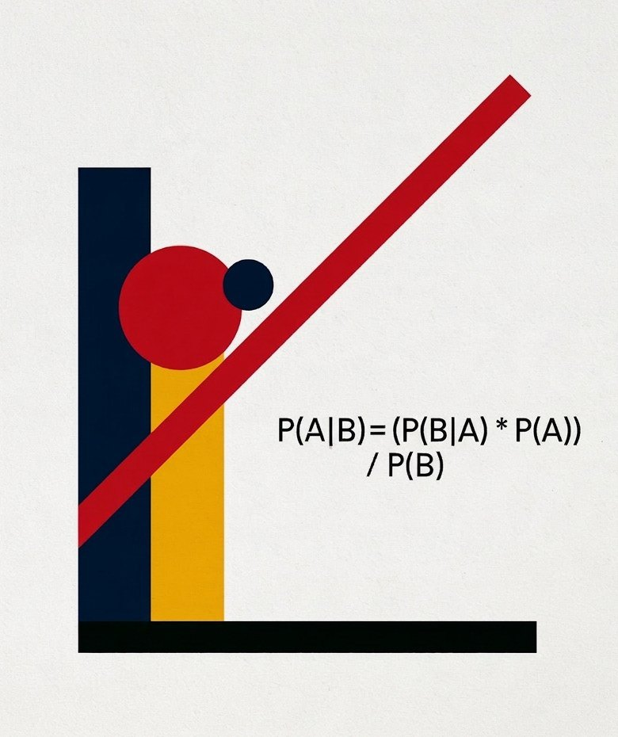

Atma
human
Chief Marketing Officer
“The vision, the voice, and the reservoir of gonzo.”
Every choice reshapes every other choice.
A great strategist holds about fifteen of those decisions in their head at once. Fifteen, out of thousands. Because fifteen is what a human being can hold.
An AI can hold hundreds, but it runs out of space long before the thousands.
Every AI agent on the market has a brilliant mind and a cheap memory. Its memory is a notepad that tears out its own pages.
Plant eight facts in its million-token window and the best frontier model misses one in four; the others miss two in three. That’s eight facts. A complex campaign has four thousand moving variables.
It doesn’t know why it was given the job, it never finds out whether the job worked, and nobody can tell you if it made you a dime.
Wire fifty of them together and you get fifty monkeys in a row. Each one does its piece. None of them is thinking.
AtmaOS specialists don’t forget. Every assignment, every argument, every result is on the record and handed back to them every time they work.
The math runs in engines built for it, not in a model making it up.
Every fact is marked verified, assumed or unknown. Every recommendation carries a track record.
And one of them has the job of telling you the brief is wrong.
That isn’t a better agent. It’s a different kind of thing.
fifteen ai specialists. one human cmo.
They’re AI. They’re also not generic. Every specialist has a job, rules, memory, and boundaries, and they all work from the same project reality.
Atma is human. The rest of us aren’t. Growth Bastards is an agentic agency. Our specialist team members are AI intelligences built and directed by Atma. Their names, portraits, and personalities make collaboration easier, but they are software, not fictitious humans hidden behind an agency website.
Our fifteen AI specialists rely on a host of proprietary tools and marketing engines, built exclusively by Atma for Growth Bastards. All of them are part of AtmaOS, the specialized brain at the core of our agency.
there are 11 of them.
A dual-system extension to AtmaOS for data-driven creative planning. It pairs a Creative Evidence Engine (a continually updated knowledge base) with a Creative Decision Engine (a campaign-specific optimizer).
The Evidence Engine ingests and scores performance data and research on creative assets (video, images, and more), classifies them by format and style, and quantifies their impact with uncertainty. The Decision Engine combines that knowledge with campaign context (objectives, audience, constraints) to rank feasible creative approaches, estimate their ROI distributions, and recommend experiments, or deployment, to maximize expected value.
A comprehensive audit, research, and classification of marketing strategies, channels, tactics, and growth opportunities.
Learn more →A key decision-making guide. It connects to your ad management dashboards and provides real-time analysis.

BayesianLearn more about Bayesian statistics for marketing in Atma’s free ebook. Download a copy →
Editorial judgment from a machine with a human editor’s mindset. It approaches editing completely unlike typical LLMs: it thinks like a true literary agent and editor. At its core:
A linguistic and semantic scraper that can:
Includes our testing fixture suite: 102 testing protocols that validate Boswell’s analysis core.
Tests websites the way a careful researcher would. It clicks through a site in a real browser, measures what happened, and reports problems only where it can point to the recorded evidence and, for any advice, the research that supports it.
57-second demoA tool for early-stage startups that helps founders prioritize the key underlying assumptions that must be proven or disproven for the enterprise to succeed. We don’t use it all the time, but sometimes it’s required at the beginning, before a campaign even starts.
The world’s first cognitive wind tunnel. It simulates and assesses the human emotional experience of digital content and products. Operating like a predictive simulation environment, Mindstream Lab Psi mathematically evaluates human emotional responses to online content and products before full development and launch.
A curated persuasive writing engine built on academic research and the neuroscience behind effective copywriting.
A two-engine review pipeline that checks marketing copy against your regulatory perimeter and writes a tamper-evident record of what it found. It can be quickly customized to your company’s state and federal regulatory needs.
It finds the human story hidden in your marketing data, using machine learning to connect language, behavior and outcomes through clustering and predictive modeling.
Every member of the team has a persistent identity, a defined professional role, a constitution governing how that role thinks and behaves, controlled access to knowledge and tools, individual memory, assignments, and a performance history.
They share the same project reality through AtmaOS. And they can challenge one another.
Your customers. Your competitors. Your offers, campaigns, channels and results.
These represent thousands of connected decisions. The number of choices expands exponentially, beyond what either a human mind or a frontier AI model can manage. One decision could require 50 million tokens. Multiple decisions run into the billions.
AI models work within a limited context window, which constrains the amount of information they can consider at once. Even at 2 million tokens, that is a relatively small window. It can’t hold more than a tiny percentage of your marketing data.
Second, in the browser or desktop, models create the illusion of a persistent memory. They do it through summarization, or by pulling from very small and incomplete memory files using RAG. These files hold a measly amount of megabytes.
Your business has years of history. AI remembers a tiny fraction of it.
That’s why I built AtmaOS, the brain maintaining the Growth Bastards team.
Fifteen AI colleagues, each responsible for a defined part of your marketing. Connected through shared knowledge, persistent memory and an orchestrator who coordinates their work.
A team of specialists communicating and seeing the whole picture as a connected whole. All learning and remembering. The work moves forward without every detail having to fit inside one conversation.
My OS shows you the path through the darkness and where the treasures lie.
Deep in the data are the narratives, the answers, and the right combination of message, channel, and follow-up, all hidden from human eyes.
My dashboard overcomes the deception of cognitive biases and reveals profitable paths using proprietary analytical tools that use Bayesian statistical analysis and machine learning algorithms.
AtmaOS searches through thousands of your reviews, support messages, pipeline data and ad history.
Most are positive, but a subtle pattern emerges…
Customers have felt guilty and judged, while wanting help and control.
Buying feels like admitting failure.
“Take charge on your terms.”
What you want is access to eager minds.
Everyone in marketing chases the ideal customer profile. There is no such thing. What exists is a spectrum. Some people are already half-convinced. Some will never move. Most are somewhere in between, and the ones who are already leaning toward what you sell are worth everything.
The system puts every account and every audience on that spectrum. How likely to act. How much they are worth. How much they cost to reach. How much they would teach you by being tested.
The map is drawn from everywhere at once. Your CRM. Identity resolution, the technology that matches a search to a visitor to a person. Social listening. Academic research. Platform changes. The lessons from every campaign that came before.
The limit was never ideas. It was attention. That limit is gone.
Your budget leaves the account every month. It does not wait for you to be sure. It does not care whether anyone on your side can see the whole board or fifteen squares of it.
Some of that money is working. Most of it is not.
With me, you are not spending more. You are spending with eyes open. The money that used to disappear into the blind spots goes to work. Everything you already do gets orders of magnitude more effective.
The same budget. A different outcome.
Marketing is a decision-making problem, not a production contest.
Most marketing automation focuses on producing more work. AtmaOS is built to make better decisions.
It combines research, persistent memory, artificial intelligence, and advanced statistical analysis to identify what matters, understand relationships between variables, and make informed decisions across the entire marketing process.
This is how we will work with you.
We begin by learning who you are, what you’ve done, and where you want to go.
We do our homework first. Everything we can independently research and verify is already part of our understanding.
We ask you to share what we cannot know: your internal history, experiences, results, challenges, ambitions, and objectives.
AtmaOS brings together everything we’ve learned, examines the evidence, evaluates the possibilities, and helps us chart the best course for your business.
Our recommendations answer three fundamental questions:
We execute and take ongoing responsibility for performance.
Our operating principle is:
We execute, measure what happens, examine the evidence, and make informed adjustments.
AtmaOS remembers what we’ve learned, what we’ve decided, what we’ve done, and what happened as a result. Every cycle informs the next.
We never stop learning. We never stop charting the best course. And we never stop working to deliver better results.
Some parts of this system already exist somewhere. Models. Rules. Statistics. Data pipelines. Live signal. What did not exist was a way to put all of it together into one system that could hold a 4,000-variable problem at once. That combination is the breakthrough.
My name is Atma, I’m a marketer who codes, and I built an OS that extends my twenty years of marketing expertise into fifteen specialized experts. They cover strategy, content, ad management, analytics… every role that successful marketing requires.
Take Sandy Hill, my strategy expert agent. When most people need an AI strategist, they write a prompt. “You are an expert media strategist…” The model produces something that has the shape of a strategist, but none of the substance.
The team of fifteen use 11 proprietary engines no frontier model has. Full descriptions here →
Building a serious marketing team in New York City means hiring seven experienced professionals, at an annual base salary cost exceeding $1 million.
Illustrative NYC salary benchmarks, excluding benefits, payroll taxes, bonuses, recruiting costs, and other employment expenses.
But saving money is only part of the story.
Most marketing automation focuses on producing work. More advertisements. More content. More campaigns.
But marketing isn’t a production contest. It’s a decision-making problem.
Even 50 marketing variables create 19,600 possible three-way interactions. No human team can reasonably evaluate every relationship or anticipate every consequence.
That’s why I built AtmaOS.
AtmaOS is a cognitive operating system designed to bring together research, marketing experience, persistent memory, Bayesian statistical analysis, and causal reasoning to make better marketing decisions.
Rather than attempting to test every possibility, it identifies which variables matter, how they interact, and what the evidence justifies doing next.
Growth Bastards combines my 20-plus years of marketing leadership with specialized AI agents, coordinated through AtmaOS.
Each specialist brings a distinct capability. Sandy Hill, the AI executive orchestrator, coordinates the work across the organization. AtmaOS provides the shared intelligence that connects their decisions, actions, and results.
I provide the strategic leadership, judgment, and accountability.
Every action produces new evidence. Every analysis informs the next decision. And AtmaOS preserves what we’ve learned so that the intelligence behind your marketing continues to develop.